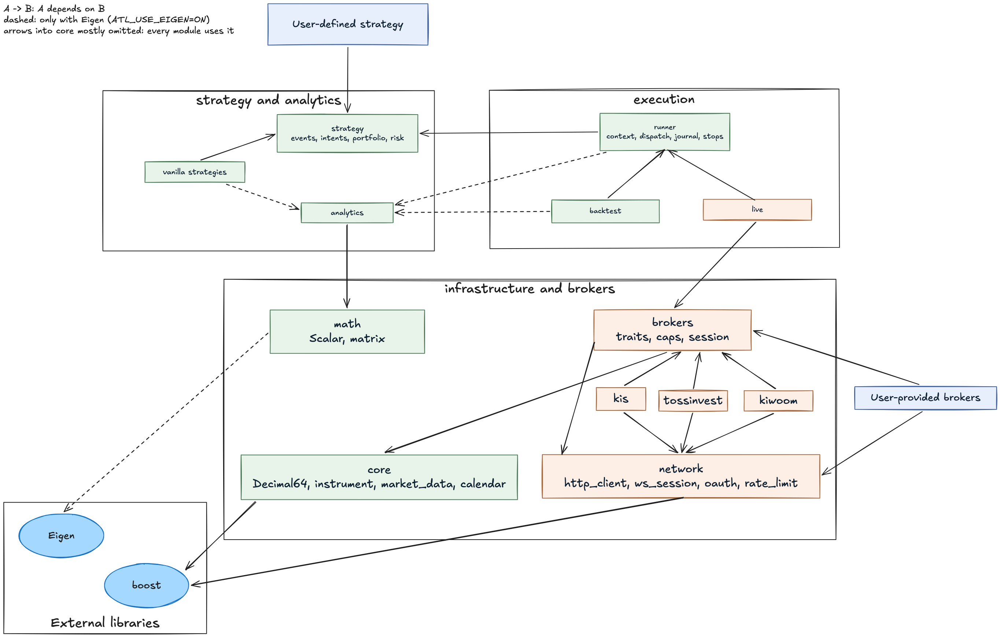

|
algotradelib 0.0.0.9000
C++ header-only library for algorithmic trading
|
|
algotradelib 0.0.0.9000
C++ header-only library for algorithmic trading
|
AI-GENERATED DOCUMENTATION
This documentation was generated with the assistance of AI and may contain inaccuracies.
A C++ library for algorithmic trading through Korean broker APIs — currently Korea Investment & Securities (KIS), Kiwoom Securities and Toss Securities.
Header-only, consumed through CMake. A strategy is a plain struct that performs no I/O and names no broker, so one source is replayed against history, dry-run with no credentials, and then run live without being rewritten — against KIS, Toss or Kiwoom, where a runner needs a few statements from you first (see "Brokers and accounts"). Selecting a broker is choosing a type parameter.
This library sends real orders to real accounts. It has placed orders on KIS and Kiwoom demo accounts, but has not yet run end to end on a real account. It is in development (0.0.0.9000, no release yet). Rehearse on a demo account first, and read "Brokers and accounts" and the Disclaimer below before you do.

Blue is what you bring; orange is the side that talks to a broker, and its HTTP and TLS code is in network and the adapters. Green reaches no transport header and instantiates no adapter or TLS code — asserted at compile time, not by convention, so there is no instantiated code path from a backtest to a market. It does not mean libssl is off the link line; the package exports one interface target for every consumer, as the prerequisites below explain. The architecture vignette has the full picture, the dependency rule underneath it, and what that compile-time claim does and does not cover.
| Dependency | Floor | Needed for |
|---|---|---|
| A C++17 compiler | — | everything |
| CMake | 3.10 for the library, 3.16 for the consumer example below, 3.19 for the tests | everything |
| Boost | 1.87, component json | everything (see below for where to get it) |
| OpenSSL | 3.0 | everything (see below) |
| Eigen | 3.4 | the analytics layer, on by default |
Three of those floors are worth a sentence each.
The CMake numbers are not a typo. The library itself configures under 3.10, so an existing project on an old CMake can consume it. The consumer CMakeLists.txt shown below asks for 3.16, which is simply a saner floor to start a new project on. Lower it to 3.10 in your own project if you need to; nothing here requires the newer version. Building this repository's tests needs 3.19, for Catch2's test discovery, and downloads Catch2 if it is not installed. The commands on this page use cmake -S . -B build, which needs 3.13, and ctest --test-dir, which needs 3.20; on an older CMake, configure from inside the build directory and run ctest there.
OpenSSL's floor is an API minimum, not a recommendation. The headers call OpenSSL directly only to set the TLS server name, which OpenSSL has offered since long before 3.0; everything else goes through Boost.Asio's ssl layer. So the build accepts 3.0. But upstream support for 3.0 ended in September 2026: for anything that trades, use 3.5, the long-term support line (supported until April 2030), or a distribution package that still receives security fixes. The tests have been built against 3.6 and 4.0 (Homebrew), and the coverage workflow builds them against Ubuntu 24.04's 3.0 package. Homebrew's openssl@3 is keg-only: if CMake does not find it, pass -DOPENSSL_ROOT_DIR=$(brew --prefix openssl@3).
Boost 1.87 is newer than many Linux distributions ship (Ubuntu 24.04 has 1.83). Homebrew has it; elsewhere, build Boost from source, or configure this repository with -DATL_FETCH_DEPS=ON (CMake 3.24), which downloads Boost 1.87 into the build tree, with Eigen when the analytics layer is on and Catch2 when the tests are, and installs nothing. OpenSSL is never fetched.
Boost and OpenSSL are required even for a backtest that touches no network. The library exports one interface target for every consumer, so an offline program still links libssl, libcrypto and boost_json. That is measured, not assumed — inspecting a dry-run binary's dynamic dependencies shows them. What is genuinely true is the narrower claim above: a dry run or a replay instantiates no adapter and no transport code, asserted at compile time by tests/test-runner-isolation.cpp.
That is the whole of it. ATL_BUILD_EXAMPLES and ATL_BUILD_TESTS default to OFF, so a submodule build compiles nothing but your own sources against the headers.
Configure your project with -DCMAKE_PREFIX_PATH=/your/prefix if that is not a location CMake already searches. The installed package config records whether the library was built with a backend, so a consumer is never asked to restate how it was configured and cannot get it wrong.
<algotradelib/version> (also included by <algotradelib/core>) defines ATL_VERSION_MAJOR, ATL_VERSION_MINOR, ATL_VERSION_PATCH and ATL_VERSION_DEV, and ATL_VERSION_STRING. The header is the only place the version is written; CMake reads it, so the package version always agrees.
ATL_VERSION encodes the release only, as BOOST_VERSION does. ATL_VERSION_DEV is 0 for a release and otherwise marks unreleased work after it: today's 0.0.0.9000 is the development version before any release.
| Option | Default | Effect |
|---|---|---|
| ATL_USE_EIGEN | ON | the analytics backend; see below |
| ATL_BUILD_EXAMPLES | OFF | the example-* programs in examples/ |
| ATL_BUILD_TESTS | OFF | the Catch2 suite in tests/ |
| ATL_ENABLE_COVERAGE | OFF | coverage instrumentation for that suite (Clang or GCC) |
| ATL_FETCH_DEPS | OFF | download Boost, and Eigen and Catch2 when they are needed, instead of finding them; installs nothing (CMake 3.24; the CI uses it) |
ATL_USE_EIGEN=OFF does not make analytics slower — it removes them. <algotradelib/analytics> becomes a deliberate #error naming the option to set, backtest::summarize and backtest::Report are gone, and <algotradelib/vanilla> ships only BuyAndHold and TimedLiquidation, since every other vanilla sits in a header that needs <algotradelib/analytics>. The replay engine itself runs either way, so a build without a backend can still execute a strategy; it just cannot score one.
To build and run the library's own checks:
A strategy receives events and emits intents. It holds no session, so this same struct runs in all three configurations below.
Replay it against history. Backtester is Runner with a replay clock and a fill model; the fill never comes from the bar that produced the order, so the lookahead discipline is structural.
examples/example-backtest-compare.cpp does this offline for a strategy of its own beside BuyAndHold, SmaCrossover and DonchianBreakout, on identical bars, and prints:
Run it live. Copy examples/example-live-program.cpp and examples/live_program.hpp, and replace the strategy — BuyAndHold of one share — with yours. It is the production path, for KIS and Toss (on Kiwoom it observes, and places nothing until you state what its holdings inquiry covers and give the runner a trading calendar, since Kiwoom publishes none; lifting the market-phase limit instead would send a daily strategy's decisions at midnight, where brokers reject them):
On demo these two stop at reference data, which a KIS demo host refuses, unless market data comes from elsewhere, as below.
Or keep each account's keys in its own file and pass the directory: --credentials DIR (or ATL_CREDENTIALS_DIR) reads DIR/kis/demo.json, or real.json with KIS_DEMO=0. On demo, market data then comes from real.json through a session with no account, because a KIS demo host refuses reference data and the calendar; --market-data toss reads it from Toss instead (demo only). With either, a demo run knows the market phase, so --live places demo orders. Kiwoom issues one key per account, so it reads DIR/kiwoom/demo-<label>.json (real- with KIWOOM_DEMO=0), the label chosen with --kiwoom-account (default kr). With a directory, neither broker reads its environment keys. See "Credentials from files" in Talking to a broker directly.
Without --live the runner is bound with live::bind_observer, which has nothing to send through. With it, live_program::trade does what a restartable run needs, in the order it needs it:
The journal is named after the account and scoped to broker, demo or live, and account, so a demo journal refuses to continue as a live one. The exit code tells the endings apart: 0 clean, 1 a closing pass that did not get everything out, 2 journal refused, 3 recovery halted (the program prints the manual procedure), 4 reference data unreadable, 5 polling abandoned, 6 a local failure during the run (usually a journal write; read the broker's order list), 7 the account could not be settled (a Toss key reaching several accounts needs --toss-account), 8 the run stopped placing by itself because an order has been owed too long with nobody able to account for it (do not restart it: read the broker's lists first), 64 a usage error, 70 an exception escaped (what was in flight may then be unknown). Within an iteration the loop polls the order list, then holdings, then bars, of whichever are due, so every bar reaches the strategy against an account already read (when that read succeeded; a failed one holds sending, not the bars). At start the strategy is shown the history read, but only the newest closed bar's decision can be sent: at once if the market is open; otherwise an opening order waits for the first open iteration and an exit is sent, and kept if the broker refuses it. After that a daily bar is fed at the first poll after midnight KST, its session over, under the same rule. The buying-power guard is left off, its default. On Kiwoom it places nothing as shipped — see "Brokers and accounts" below. Recovering after a crash explains each step, the report recover_runner returns, and the five verdicts a sweep of the broker's lists gives.
Bars reach a replay either from a broker (example-backtest-broker fetches real history through KIS, with real-account keys and KIS_DEMO=0 since a KIS demo host refuses the reference data it reads first, or through Toss) or from Bar values you construct yourself. This library reads no files on purpose: parsing somebody's CSV is not a thing it can do honestly for everyone, and it belongs in your project where its assumptions are yours.
Eight of the programs in examples/ need no credentials, no network and no broker at all, and are the fastest way to see each layer work: example-strategy-dryrun, example-backtest-offline, example-backtest-compare, example-inverse-fund, example-live-loop, example-order-journal, example-analytics-offline and example-rate-limit-stats. example-kis-place-order is offline too — it constructs and prints an OrderRequest and can send nothing. The rest read credentials from the environment, and the KIS and Kiwoom ones also from a credentials directory, except example-backtest-broker, which reads only the environment; the broker clients page lists which.
| Broker | State | Paper trading |
|---|---|---|
| KIS | market data, calendar, reference data, holdings, buying power, orders (including stop-limit), order history | default (KIS_DEMO=0 for live) |
| Kiwoom | market data, reference data, buying power, orders (including stop-limit) and order history through the session; no calendar; holdings refuse until you state what its kt00018 inquiry covers (below); a strategy runner needs a stated route (below) | default (KIWOOM_DEMO=0 for live) |
| Toss | market data, calendar, reference data, holdings, buying power, orders (no stop-limit), order history | none |
KIS and Kiwoom are demo unless you say live. Live — the one choice that moves real money — has to be written down: KIS_DEMO=0 / KIWOOM_DEMO=0, "demo": false in a credential file, or is_demo_ = false in code. Anything unstated uses the broker's 모의투자 (paper-trading) endpoints, where live keys are refused, so a forgotten setting fails instead of trading. A value that is set must be exactly 1 or 0; anything else refuses to load.
A KIS demo account cannot read reference data or the calendar. Its host refuses both (EGW02006). Given a credentials directory with kis/real.json, example-live-program reads them, and all market data, from the real account's keys with no account selected, or from Toss (--market-data toss), while orders go to demo. Without one, a demo run stops at reference data.
Toss has no paper-trading environment. A Toss program with credentials trades real money; rehearse a strategy with a replay or a dry run, or on a KIS or Kiwoom demo account, first.
Kiwoom's holdings need a statement from you. kt00018, the inquiry holdings come from, takes a venue and does not say whether it filters positions by venue or values them by it. Rather than guess, the adapter refuses holdings — and so every sellable and position check — until KiwoomConfig::holdings_venue_ and holdings_position_scope_ are set (and holdings_sellable_scope_ for checked sells). The members' documentation explains each choice.
A Kiwoom strategy runner needs its route stated. Kiwoom requires every order to name its venue, and the orders a strategy produces name none, so bind the runner with a default route — live::bind_journaled(session, journal, strategy, limits, live::default_series_capacity, Venue::KRX), or Venue::NXT, or Venue::COMBINED for Kiwoom's SOR, which every Kiwoom order endpoint documents. Prefer KRX or NXT for now: Kiwoom's working-order listing marks a SOR order with a separate sor_yn flag, which the adapter reads so that recovery after a crash recognises the order, but neither that flag nor whether a Kiwoom demo account accepts SOR has been seen on an account (see SessionExecutor::default_route). Without a route the adapter refuses each order before sending it. example-live-program states KRX. Kiwoom also publishes no trading calendar, so a runner's market phase stays unknown and the default limits open no position.
KIS: own-account customers only. The library sends custtype P (일반), which covers individual and corporate customers trading their own account. KIS's partner program for licensed firms serving third parties (custtype B, with personalseckey, per-member phone_number / ip_addr and gt_uid) is not supported.
Order routing across both Korean books is opt-in. At KIS an order that names no venue routes to KRX; Venue::COMBINED asks for SOR, and a runner opts in by binding with Venue::COMBINED as its default route. That is not the default because a KIS demo account refuses SOR, and a default that fails on demo would stop a demo run rehearsing the live one. As at Kiwoom, prefer KRX or NXT until SOR has been observed: whether KIS lists a SOR order back as SOR or as the venue it rested at is unknown, and recovery after a crash depends on it (see SessionExecutor::default_route). A Kiwoom order must name its venue. Toss offers no choice.
The user guide is eleven pages in the order they are worth reading:
| Page | What it answers | |
|---|---|---|
| 1 | Architecture | what the pieces are, and why the strategy holds no session |
| 2 | Writing a strategy | the handlers, warm-up, prices, reaching a broker-specific feature |
| 3 | Binding a broker | the limits, how finely a target is chased, what killing the process does |
| 4 | Market data | bars and paging, the stamp conventions, the price grid, the calendar |
| 5 | Analytics conventions | two numeric types, two kinds of absence, the smoothing constants |
| 6 | Reading a backtest honestly | what the fill model assumes, and what to distrust first |
| 7 | Running a strategy live | the three stops, the gates, the supervisor grace period |
| 8 | Recovering after a crash | the journal, the five verdicts, reading them under pressure |
| 9 | The broker port | BrokerTraits, BrokerCaps, order identity — read this to add a broker |
| 10 | Talking to a broker directly | the KIS, Kiwoom and Toss clients, and the order-safety rules |
| 11 | Transport and request pacing | the pacer, the traffic classes, how each broker reports a refusal |
The same pages, with the API reference, build into HTML with Doxygen, in a build directory configured as in "Build options":
The target exists when CMake finds Doxygen and this library is the top-level project; a project that adds it with add_subdirectory does not get it. doxygen doxygen/Doxyfile, run from the repository root, builds the same pages without the version.
This project was developed with the assistance of generative AI tools.
algotradelib is released under the MIT license; see LICENSE at the repository root. The software is provided as is, without warranty of any kind, and the authors are not liable for any loss, including trading losses, arising from its use. Nothing in this repository is investment advice.